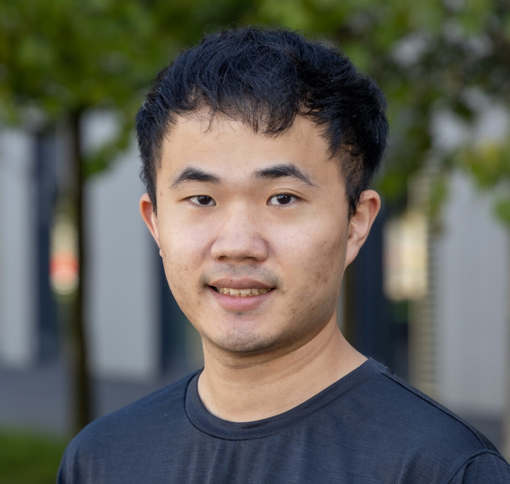

Abstract Interpretation Workshop
Hello! During a full week in June, we gather together to study abstract interpretation from its theoretical foundation (lattice theory) to its latest applications (constraint programming, neural network verification).
Abstract interpretation is a formal theory of software verification invented by Radhia and Patrick Cousot in the seventies to detect bugs in programs statically (“at compile-time”) and directly on the source code (not on a model of the program). The main contribution of abstract interpretation is to overapproximate the semantics of a program: violations of properties are always discovered, but we sometimes obtain false-positives. The mathematical framework of abstract interpretation is rich and the papers in the field are complicated for beginners. During this week, we take our time to understand and digest the main ingredients of abstract interpretation.
Further, this framework of approximation turns out to be very general and goes beyond program verification. It was recently applied to constraint reasoning and neural network verification, two topics we also discuss during the week.
PS: Dear PhD students, this workshop does not grant ECTS (but you will still learn something!).
Registration
To have an idea if the rooms are big enough and to avoid running out of coffee, please register here.
Schedule
Week of the 17th June 2024. The coffee (from Jolt coffee shop, mmh, delicious) and pastries will be offered every morning :-) For the brave ones coming to the practice sessions on Monday and Tuesday, coffee and pastries are offered again!
- Monday:
- Tuesday:
- Wednesday (MNO 1.050):
- 9:00-10:30: Introduction to Abstract Interpretation, Pierre Talbot, slides.
- 11:00-13:00: Introduction to Constraint Programming, Manuel Combarro, slides, N-queens.mzn, N-queens-alldifferent.mzn.
- Thursday (MNO 1.040):
- Friday (MNO 1.010):
Speakers

Pierre Talbot (research scientist) ▪ Bruno Teheux (assistant professor) ▪ Thibault Falque (postdoctoral researcher) ▪ Manuel Combarro (PhD candidate) ▪ Yi-Nung Tsao (PhD candidate)
Detailed Program
Find below a detailed description of each session with keywords.
Introduction to Lattice Theory
Partial order ▪ Lattice ▪ Monotone functions ▪ Cartesian product ▪ Complete lattice ▪ Fixpoint ▪ Galois connection
Recommended prerequisite: None.
The goal of these two lectures is to have a first grasp of the mathematical theory underlying abstract interpretation. On the first day, we study partial order and lattices, properties of functions over lattices and several lattice constructions such as products and powerset. On the second day, we overview more advanced concepts such as fixpoint and Galois connection which are particularly useful in abstract interpretation.
Introduction to Abstract Interpretation
Syntax ▪ Reachability semantics ▪ Chaotic iterations ▪ Abstract domains ▪ Widening ▪ Reduced products
Recommended prerequisite: Introduction to Lattice Theory.
The goal is to understand how we can use lattice theory to overapproximate the semantics of program and certify the absence of bugs. We start by reviewing existing verification techniques (e.g., model checking, theorem proving) and discuss the position of abstract interpretation in this landscape.
Introduction to Constraint Programming
Constraint satisfaction problem ▪ Constraint modelling ▪ Propagation ▪ Consistency ▪ Search ▪ Minizinc
Recommended prerequisite: None.
Constraint programming is a powerful paradigm to model problems in terms of constraints over variables. This declarative paradigm solves many practical problems including scheduling, vehicle routing or biology problems, as well as more unusual problems such as in musical composition. Constraint programming describes what the problem is, whereas procedural approaches describe how a problem is solved. The programmer declares the constraints of its problem, and relies on a generic constraint solver to obtain a solution. In this talk, we formally define what is a constraint satisfaction problem (CSP) and the underlying solving procedure. Further, this session will be interactive and time will be allocated so you can try to model and solve your own combinatorial problem in the Minizinc constraint modelling language!
Abstract Constraint Programming
Abstract satisfaction ▪ Solver cooperation ▪ Propagator completion ▪ Table abstract domain
Recommended prerequisites: Introduction to Lattice Theory, Introduction to Abstract Interpretation, Introduction to Constraint Programming.
This talk presents a recent research field!
Combinatorial optimization is a large field of research aiming at finding (best) solutions of logical formulas. There are many research communities working separately on reasoning procedures that work well on different kinds of problems (essentially depending on the underlying domain of discourse and logic predicates). For instances, linear programming solvers are the best to solve linear equations over real numbers but has more difficulty over integers and are unable to deal with non-linearity. SAT solvers can solve very large Boolean formulas but problems can be hard to express compactly when only Boolean variables are available. Constraint programming is a general approach to constraint solving but this generality makes it slower the classes of problem mentioned above. The issue is that each approach is based on different theoretical foundation which makes solver cooperation hard to achieve. We believe abstract interpretation can provide a unified theory of constraint reasoning by abstracting each solving approach in abstract domains, that can then be combined with different products. The first step is to cast the theory of each approach in the framework of abstract interpretation. It has already been started for linear solvers, SAT and constraint programming solvers. In this talk, we focus on the constraint programming approach and present our latest research on this topic.
Octagon Abstract Domain
Octagon ▪ Temporal constraints ▪ Scheduling problems
Recommended prerequisites: Abstract Constraint Programming.
An octagon is an abstract domain able to reason over conjunction of temporal constraints which are restricted linear equation of the form ±x ± y ≤ k where x,y are variables and k a constant.
Octagons offer a particularly interesting compromise between expressiveness and efficiency since they can compute the solutions of a set of temporal constraints in cubic time using the Floyd Warshall shortest path algorithm.
We explain octagon in the context of abstract constraint programming and show how it can enhance solver performance, particularly in scheduling problems.
We also discuss a particular case of reduced product between the propagator completion and octagon abstract domains.
Introduction to Neural Network Verification by Abstract Interpretation
Neural network verification ▪ Robustness metrics ▪ Zonotope abstract domain
Recommended prerequisites: Introduction to Lattice Theory, Introduction to Abstract Interpretation.
This talk presents a recent research field!
Neural networks have become powerful and popular machine learning techniques in recent years. There are many safety-critical applications based on neural networks, such as autonomous driving systems. However, they can be vulnerable to adversarial examples, which are instances with imperceptible perturbations that can lead to incorrect results from neural networks. Therefore, in these safety applications, if any adversarial examples exist, the neural network may make wrong decisions, potentially causing serious consequences. Nowadays, many algorithms and frameworks have been proposed to verify the robustness of neural networks. In this talk, we will introduce how to use abstract interpretation to evaluate the robustness of neural networks. Additionally, we will provide a simple example to demonstrate how to construct a zonotope, which is one of the abstract domains, to verify neural networks.
Parallel Lattice Programming
GPU ▪ Asynchronous iterations ▪ Concurrent constraint programming ▪ Memory consistency ▪ Parallel graph algorithms
Recommended prerequisites: Introduction to Lattice Theory.
This talk presents a recent research field!
We introduce a programming language in which data are lattices, programs are monotone functions, and the execution model is a fixpoint loop. The peculiarity of this language is to have a native parallel operator (P || Q) but no sequence operator (P;Q). Due to its lattice execution model, data races are natively supported (they do not modify the final results), no deadlock can occur, and the implementation is lock-free. We study several algorithms that can be written in this paradigm including a sorting algorithm and the Floyd-Warshall shortest path algorithm. We discuss how this paradigm was applied to write Turbo, a constraint solver based on abstract interpretation that fully executes on the GPU.
References
Here are some references relevant to the various sessions:
Books
- Davey, Brian A., and Hilary A. Priestley. Introduction to Lattices and Order. Cambridge University Press, 2002.
- Cousot, Patrick. Principles of Abstract Interpretation. MIT Press, 2021.
- Apt, Krzysztof. Principles of Constraint Programming. Cambridge University Press, 2003.
- Aws Albarghouthi, Introduction to Neural Network Verification. Foundations and Trends® in Programming Languages (2021).
- Changliu Liu, Tomer Arnon, Christopher Lazarus, Christopher Strong, Clark Barrett and Mykel J. Kochenderfer, Algorithms for Verifying Deep Neural Networks. Foundations and Trends® in Optimization (2021).
Selected Papers
- D’Silva, Vijay, Leopold Haller, and Daniel Kroening. Abstract Satisfaction. POPL 2014.
- Miné, Antoine. The Octagon Abstract Domain. Higher-order and symbolic computation (2006).
Our Papers
- Manuel Combarro Simón, Pierre Talbot, Grégoire Danoy, Jedrzej Musial, Mohammed Alswaitti, and Pascal Bouvry. Constraint Model for the Satellite Image Mosaic Selection Problem. CP 2023.
- Talbot, Pierre, Frédéric Pinel, and Pascal Bouvry. A Variant of Concurrent Constraint Programming on GPU. AAAI 2022.
- Talbot, Pierre, Éric Monfroy, and Charlotte Truchet. Modular Constraint Solver Cooperation via Abstract Interpretation. Theory and Practice of Logic Programming (2020).
- Talbot, Pierre, David Cachera, Eric Monfroy, and Charlotte Truchet. Combining Constraint Languages via Abstract Interpretation. ICTAI 2019.
Sponsors
This project occurs in the context of the project COMOC (ref. C21/IS/16101289), 2021-2025. We thank the Luxembourg National Research Fund (FNR) for this opportunity.